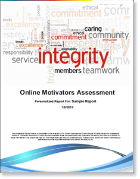
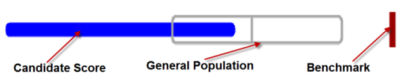
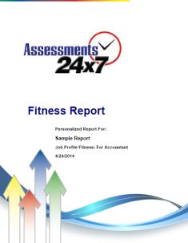
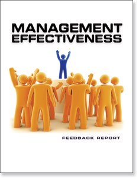
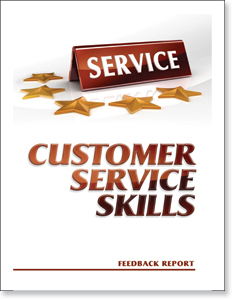
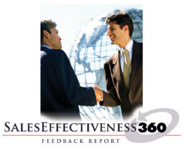
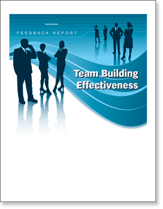

| DISC
Assessments Also available in several foreign language reports. Questionnaire is available in 90 different languages. An indisputable fact is that people prefer to interact with people they like. The ability to create rapport with people is a fundamental skill in sales, management, personal relationships, and everyday life. The goal of the DISCstyles is to help you create personal chemistry and productive relationships. You do not have to change your personality; you simply have to understand what drives people and recognize your options for effectively dealing with them. DISCstyles teaches you powerful life skills that will serve you well in all your relationships: business, social and family. The DISCstyles online assessment is a resource for individuals and organizations desiring to improve performance, increase productivity and to positively persuade other people. Unlike many other behavioral assessments, our reports are as much prescriptive as they are descriptive! In other words, we spend as much time teaching you how to improve your own productivity and interpersonal interactions as we do describing your natural DISC behavioral style. We realize that you are about to invest money and time in our online assessment, so we want you to come away with fast, effective learning strategies that get you results immediately. The DISC Assessment is valuable for individuals and all types of organizations: public or private; large or small.
DISC Assessment Applications: How you can use DISCstyles to help others
|
|
| Motivators
Assessment This Motivators
Index will help you understand your motivators and drivers and how to
maximize your performance by achieving better alignment and passion for
what you do.
The Online Motivators Assessment uses a click & drag approach to ranking the various statements in the instrument, which makes taking the instrument more intuitive, natural and in the end you can actually create the order you see in your mind on the screen. The Online Motivators Assessment instrument contains the most contemporary list of statements to make your choices more relevant to your life today, which helps ensure the most accurate results possible. |
 |
|
The Job Fitness Rating Report
The Job Fitness Rating is a measure that evaluates the strength of the behavioral relationship between a job candidate and the more typical behaviors required by a job. The Job Fitness Rating integrates all four (4) dimensions of DISC into an overall measure that reflects the strengths of the behavioral similarities and/or differences to maximize behavioral effectiveness on the job. The fitness rating is scored on a scale between 1% and 100%. The fitness rating represents the strength of the relationship between the candidate’s behavioral style and the behavioral requirements of a specific job. The higher the fitness rating, the more able the candidate’s natural behavioral style can be applied to the task of getting the job done consistent to the job profile.  A behavioral style itself is not so much what the individual thinks or says about a person, thing or idea. It’s your observation of how that individual tends to act toward people, things and ideas. The behavioral style fitness rating places a candidate’s fitness compared to a specific job benchmark on a (3) three-level rating system. The (3) level rating system ranges from limited to excellent to further clarify the fitness rating. Consider the fitness rating score like a score you are familiar with on a scale from 1 to 100. The higher the fitness rating score, the more confident you can be that the desired behaviors you want for a specific job will be observable with this candidate/individual. The lower the fitness rating, the more confident you can be that the desired behaviors you want for a specific job will not be observable with the candidate/individual. A fitness rating of .75% means that the candidate and the job profile share .75% of the target behaviors whereas 25% of the behavioral style is different. To understand which behaviors are similar or different, look at the 12 factors and four factor details on page 4 of the sample report. An Excellent Fitness Ratings means the employee/candidate will spend less energy thinking about how to adapt their behaviors to the behaviors required of the targeted job role and allow their more natural behaviors to create results. A Good Fitness Rating means the employee/candidate will need to be reminded from time to time of their behavioral effectiveness in their role. A Limited Fitness Rating means the employee/candidate will need to facilitate their behavioral effectiveness through consistent timely feedback and structures. The lack of quality feedback regarding an individual’s behavioral distance from a specific job requirement has the potential of creating a false illusion that their behaviors are effective which reinforces their current behavior. |
 |
|
Judgment Assessment It is an irrefutable fact that people have biases and blind spots in their processing and judgment ability. The work in neuroscience has demonstrated over 30+ biases to date, let alone the research that most eyewitnesses can be wrong over 75% of the time. It has also been documented that people who have better judgment make better decisions and have better social and personal intelligence that leads to better relationships and better well-being. If understanding our judgment is so fundamental to our decision making, relationships, and personal well-being, we should all be working at understanding what potential biases and blind spots we have so we can continue to remove them from our everyday lives and improve our judgment ability. The best way to improve your judgment is to get outside opinions of it and get feedback on how accurate it is. It is from gaining new perspectives of awareness that we are then consciously able to make improvement. The JUDGMENTcompass report has been built from a science that allows for an unbiased evaluation of your judgment. Unlike most self-report tests, this assessment gains understanding about your judgment ability by making you make judgments. You will be able to answer the following questions:
The report is built to not only be descriptive of your judgment strengths by indicating your judgment style, but also prescriptive as it will give you suggestions for how to reduce potential errors in your judgment that may be affecting your performance. If you are about to invest money and time in an assessment, this report is certain to provide you with information that will give you a new understanding of yourself and strategies for how to make improvements. Sometimes the new awareness alone of what influences your judgment can make instant changes in performance. JUDGMENTcompass Applications: Below are just some of the ways to use the report to help others
• Career Matching – Match your employees’ natural judgment strengths with
the best possible job fit. |
|
|
The Executive Summary Report
Leverage our 30 years of non-stop research and use what you will discover here to add a scientific performance component to your people processes. This tool can be used for employee selection and development as well as improving teamwork and interpersonal dynamics. It will assist you in dramatically reducing and even avoiding making poor people choices that are so costly, disruptive and frustrating.
Summary of the Three Performance Multipliers Critical Thinking is the first and most important performance multiplier. It has the unique ability to calculate decision speed, the capacity to work effectively with others and make the right decisions while operating within the established framework of an organization. The critical thinking measure is based upon the Nobel nominated research into human decision theory and is comprised of three sophisticated algorithms that calculate and measure an individual’s capacity to make the correct choices when faced with the problems, challenges and opportunities they encounter (when applied to their areas of expertise). The critical thinking measure reports on the capacity to:
The Internal Motivator/Driver Measurement The Internal Motivators/Drivers are the second performance multiplier. Based upon the Harvard research into human motivation, it measures the hierarchy and the relative strength of each of the seven universal human motivators and how they uniquely combine to form the “action steps” an individual will WANT to take as they translate their critical thinking decisions into concrete plans and results. It indicates how an individual will overtly or covertly want to influence the results that reflect and support their most influential motivators. The DISC Behavioral or Communication Style Measurement The Behavioral or Communication Style is the third performance multiplier. Fostered by 65 years of research into human interactive dynamics, this multiplier identifies the STYLE someone will use to communicate their motivated, critical thinking decisions to other people. Unlike other DISC tools that measure just the four primary behaviors, we measure the 12 integrated behavioral and communication factors that create the 15 integrated styles that plot how the person’s levels of assertiveness, extroversion, patience and precision uniquely combine to form the overall behavioral display the individual will most often use when sharing and communicating their ideas, beliefs, recommendations and fears with others. |
Available Reports - Download sample reports
|
| The
Management Effectiveness Profile Effective managers continually hone their skills in many diverse areas. It stands to reason that an effective manager or supervisor must be skilled in a number of critical competencies if the manager is to help the organization achieve its goals. The Management Effectiveness Profile (MEP) can help a manager identify personal strengths and weaknesses within 12 specific competency areas. A manager’s effectiveness is tied to the following competencies: Managing Your Job
Relating to Others
Developing the Team
Thinking Clearly
If you
are interested in using our Assessments, |
 |
|
The Customer Service Skills Profile There’s truth to the old adage that it costs ten times more to replace a customer than to keep one! Improving customer service skills is easily one of the most profitable investments any business can make. Most customers are willing to pay a premium to have their basic needs met in a timely and efficient manner, and will be pleasantly surprised (and grateful) if they are treated with a little dignity and respect in the bargain. This isn't asking for much, but consistent, responsive, and respectful treatment is surprisingly hard to come by. Best-practice organizations do not want customers to be surprised when they get good service. Good is not good enough. Instead, they work hard to ensure that every moment of truth or interface point with a customer creates a positive impression. They achieve this by making sure that each person who serves customers directly and each person on the internal staff who serves the frontline staff is competent in a range of important service skills. Which service skills or competencies are most critical in customer service? There are several key themes or broad competencies that seem to be priorities for good service providers. Extensive industry research suggests that there are seven competency areas:
This instrument has been designed as a self-scoring customer service skills assessment that will help individuals understand more about their relative competence in each critical area. The seven competencies that constitute outstanding service are assessed individually and collectively in order to come up with the individual’s overall profile. The competency areas can be considered as separate sets of skills, but together they create a kind of Service Skills jigsaw puzzle. No one piece will supply you with all the skills you need. By aspiring to improve your performance in all of these competencies, you can improve your ability to provide the kind of service customers want, need, and expect to pay for. Get started now and you’re well on your way to retaining more valuable customers that sign your paychecks! |

|
|
The Sales Effectiveness
360 How Ready are You for Sales Opportunities? How Ready is Your Sales Team (compared to competitors) for the Emerging Sales Opportunities in today's economy?
Sales success requires that you be
highly effective in two areas:
1. Areas on which you agree that
things are going fine For the upper-level Sales Leader or Executive: determine your organization's overall sales effectiveness and identify the training that is most needed by having each of your sales people complete an assessment. As a Supervisor or Sales Manager: you can use SalesEffectiveness360 in a coaching interview showing your observations alongside a candidate's self-assessment to determine exactly which aspects of sales effectiveness they need. You can be surgical in your coaching, rather than general. As a new or veteran Sales Professional: you will learn more about your effectiveness in all aspects of selling and you'll have a clear idea of which skills to refine first. The Assessment takes approximately 10 minutes to complete. |

|
|
The Team Building Effectiveness Profile Success in any organization today rests heavily upon how well you perform as a team. Most people will accept that a champion team will beat a team of individual champions—but how do you create a champion team? Unfortunately, effective teams never just happen; they have to be built. Usually this building process has to be done carefully and has to be customized to the particular needs of each team. Well before any attempt has been made to build the team, it is critical to understand the stages through which a typical team will travel over time. A considerable amount of research has been done on the stages of team growth. This suggests that teams go through four distinct phases—these are:
Within these four phases, seven competencies of teambuilding can be derived. These are:
If your success is directly tied to your ability to build and lead effective teams, this assessment will pay dividends to you year after year! |

|